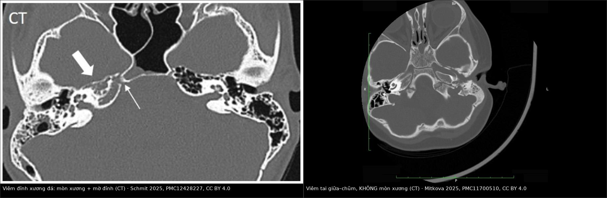
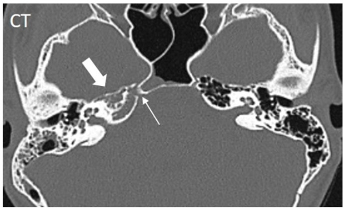
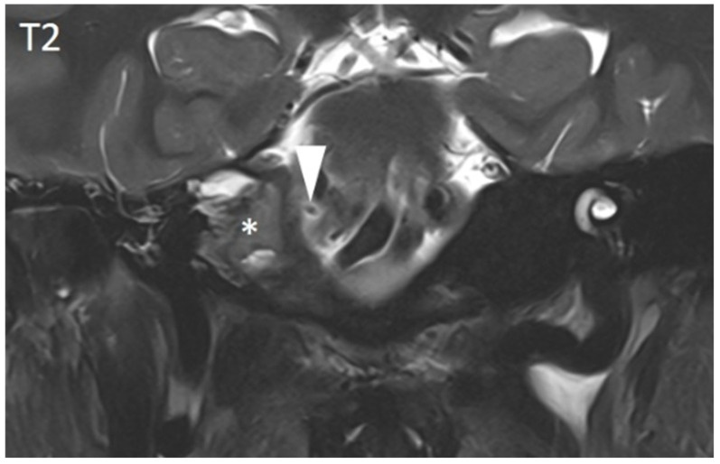
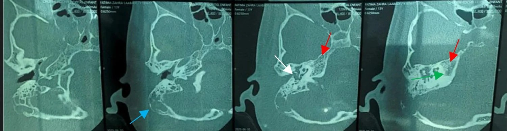
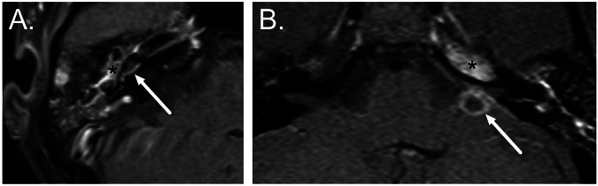
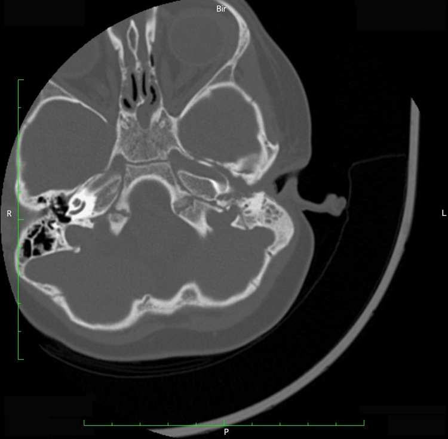
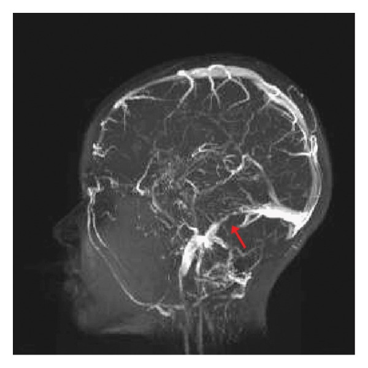
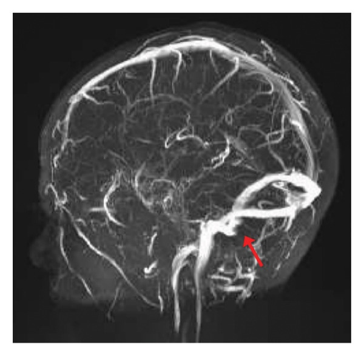

237 — Biến chứng thần kinh sọ của viêm tai: Gradenigo, liệt dây VII, viêm mê nhĩ / Cranial nerve complications of otitis media
Tags: pattern:gradenigo pattern:liet-day-VII pattern:viem-me-nhi pattern:bien-chung-viem-tai vung:xuong-da score:House-Brackmann protocol:CT-xuong-thai-duong protocol:MRI-T1-Gd
Mức chắc chắn (certainty): tổng hợp y văn (literature synthesis) — gom số liệu từ tổng quan hệ thống 65 ca Gradenigo ở trẻ (Schmit et al., PMC12428227), khuyến cáo ESR Essentials 2026 (Hirvonen et al., PMC12712113), ca nguyên văn CC BY/CC BY-SA và cohort huyết khối xoang do tai.
1. Tổng quan — vì sao viêm tai giữa lại liệt dây thần kinh sọ
- Viêm tai giữa cấp (acute otitis media — AOM) thường tự khỏi, nhưng biến chứng chỉ gặp ở < 1% ca (Hirvonen et al. 2025, PMC12712113). Khi có sốt tăng, đau sau tai, sưng sau tai, đau đầu hoặc dấu thần kinh, đó là AOM biến chứng (complicated AOM) và phải chụp ngay.
- Đường lan giải phẫu quyết định dây thần kinh nào bị liệt:
- Tai giữa → đỉnh xương đá (petrous apex) qua các tế bào khí quanh mê đạo (perilabyrinthine air cells). Viêm đỉnh xương đá (petrous apicitis) là tổn thương đặc hiệu của hội chứng Gradenigo. Ước tính 1/50.000 trẻ bị AOM (Harris et al. 2026, PMC12976808).
- Dây VI (abducens) đi qua ống Dorello (Dorello's canal) — khe xương–dây chằng giữa đỉnh xương đá và dây chằng đá–bướm (petrosphenoid/Gruber ligament) — cùng xoang đá dưới trước khi vào xoang hang. Chỉ một ổ viêm phù ở đỉnh xương đá là đủ chèn ép dây VI → song thị ngang, mắt không ra ngoài được.
- Dây V1–V2 nằm sát đỉnh xương đá/xoang hang → đau sâu sau ổ mắt (đau theo phân bố V1–V2). Đây là nửa "đau" của tam chứng Gradenigo.
- Dây VII chạy trong ống mặt (facial canal), đoạn mê đạo là hẹp nhất → viêm/phù trong AOM gây liệt mặt ngoại biên; tỷ lệ 0,004–0,005% ca AOM (Mitkova et al. 2025, PMC11700510).
- Dây VIII (ốc tai–tiền đình) qua cửa sổ bầu dục/cửa sổ tròn → viêm mê nhĩ (labyrinthitis): chóng mặt + nghe kém tiếp âm. Viêm tai giữa là nguyên nhân kinh điển của viêm mê nhĩ do vi khuẩn (tympanogenic labyrinthitis).
- Bốn câu hỏi bắt buộc khi AOM có dấu thần kinh: (1) đỉnh xương đá có viêm/mòn xương không? (2) có huyết khối xoang bên–sigma không? (3) có áp-xe nội sọ/ngoài trục không? (4) có lan xoang hang/động mạch cảnh trong không? — đó là các đích chết người, không chỉ là "viêm tai nặng".
- Vì sao CT và MRI bổ sung nhau (vật lý):
- CT xương thái dương lát mỏng: xương đặc có HU rất cao, mô viêm ứ dịch trong tế bào khí chỉ ~10–40 HU → tương phản mạnh, thấy rõ mờ tế bào khí, mòn vách xương, mòn vỏ xương đá. CT là chuỗi tốt nhất để lập bản đồ xương và lên kế hoạch mổ.
- MRI T1 sau gadolinium: viêm làm tăng tính thấm mao mạch → ngấm thuốc màng não/mô xương đá/tai trong; đây là dấu hoạt tính mà CT không thấy. MRI cũng thấy dây VI trong ống Dorello và lan ngoài trục.
- DWI/ADC: mủ đặc (áp-xe) và keratin của cholesteatoma đều hạn chế khuếch tán (DWI sáng, ADC thấp); viêm phù thông thường không hạn chế mạnh. Vì vậy DWI dùng để phân biệt áp-xe/cholesteatoma với viêm mô — không dùng một mình để chẩn đoán.
- Ngưỡng và con số cần nhớ (Gradenigo ở trẻ, Schmit et al. 2025, PMC12428227):
- 65 bệnh nhi, tuổi trung bình 8,0 (IQR 5,0–11,5); tam chứng đầy đủ chỉ 22%, thể không đầy đủ 74%, 3% không có triệu chứng điển hình nào lúc vào.
- Thời gian từ khởi phát triệu chứng đến nhập viện trung vị 14 ngày (IQR 9–21); 45% đã dùng kháng sinh trước đó → bệnh cảnh bị "làm mờ".
- MRI: viêm đỉnh xương đá 84%; CT: mờ đỉnh xương đá/tiêu xương 49%, viêm chũm 45%.
- Cấy tìm được vi khuẩn 41%, hay gặp nhất Fusobacterium necrophorum (gợi ý đường lan kỵ khí từ vòm–tai).
- Điều trị: kháng sinh 88%, phẫu thuật 72% (chích rạch màng nhĩ 77%, đặt ống thông khí 70%, khoét chũm 68%); kháng sinh nội trú trung vị 21 ngày (IQR 10–35), ngoại trú 26 ngày (IQR 14–42).
- Kết cục: cải thiện 98%, khỏi hoàn toàn 73%, biến chứng 29%, tử vong 2% (1 ca).
2. Mẫu hình + chẩn đoán phân biệt theo dây thần kinh (Gamut)
- Dây VI đơn độc + đau sau ổ mắt + viêm tai: hội chứng Gradenigo do viêm đỉnh xương đá. Nếu kèm sốt, li bì, cứng gáy → đã lan màng não/áp-xe; nếu kèm phù gai, đau đầu dữ dội → nghĩ huyết khối xoang/tăng áp lực nội sọ.
- Dây VII đơn độc trong AOM: liệt mặt do viêm tai (otogenic facial palsy) — thường do phù ống mặt, không có mòn xương; nhưng phải loại trừ viêm chũm đồng thời/áp-xe trước khi gọi là "Bell's palsy".
- Dây VIII (chóng mặt + nghe kém): viêm mê nhĩ (labyrinthitis); phân biệt nhồi máu động mạch tiểu não trước dưới (AICA) — AICA có thêm dấu thân não (thất điều, liệt dây V/VII, hội chứng Horner), khởi phát đột ngột, DWI não dương tính.
- Nhiều dây cùng lúc (III, IV, V1, VI) + lồi mắt, phù kết mạc: huyết khối xoang hang (cavernous sinus thrombosis) — lan từ viêm tai/xoang bướm, là cấp cứu.
- Dây IX–XII + đau cổ/sưng cổ: lan xuống lỗ cảnh (jugular foramen) hoặc huyết khối tĩnh mạch cảnh trong (Lemierre) — xem 238.
- Không có viêm tai nhưng liệt dây VI tiến triển: nghĩ u nền sọ/nasopharyngeal carcinoma xâm lấn đỉnh xương đá, u màng não, hoặc tăng áp lực nội sọ — không được gán cho "viêm tai cũ".
- Gợi nhớ "6-5-7-8" theo chiều từ trong ra ngoài: VI (Dorello) → V (xoang hang/Meckel) → VII (ống mặt) → VIII (tai trong); khiếm khuyết càng nhiều dây càng phải nghĩ lan rộng ngoài xương đá.
3. Bảng so sánh phân biệt (ma trận đối chiếu)
| Thực thể (entity) | Hình ảnh điển hình | Chốt vào (rule-in) | Chốt loại (rule-out) | Gợi ý xác nhận |
|---|---|---|---|---|
| Viêm đỉnh xương đá / Gradenigo | CT: mờ đỉnh xương đá, mòn vách/vỏ xương; MRI T1+C: ngấm thuốc đỉnh xương đá, có thể thấy dây VI trong ống Dorello | AOM + đau sau ổ mắt + liệt dây VI cùng bên; MRI ngấm thuốc đỉnh xương đá | Đỉnh xương đá T1 sáng, không ngấm thuốc, không mòn xương → u hạt cholesterol | CT 0,5–1 mm + MRI T1+C fat-sat; hỏi kỹ đau sâu sau mắt |
| Liệt mặt do viêm tai (otogenic VII) | CT: mờ tai giữa/chũm, không mòn xương ống mặt; MRI T1+C: ngấm thuốc dây VII/ống mặt | Liệt mặt ngoại biên cùng bên AOM, khởi phát trong đợt viêm | Liệt mặt không kèm bệnh tai, kéo dài nhiều tuần, không cải thiện → nghĩ u/tổn thương thân não | Khám House-Brackmann + MRI có/không cản quang nếu không điển hình |
| Viêm mê nhĩ (labyrinthitis) | T1+C: ngấm thuốc ốc tai/tiền đình/ống bán khuyên; FLAIR tăng tín hiệu dịch tai trong; CT thường bình thường sớm | Chóng mặt + nghe kém tiếp âm trong AOM/viêm màng não, ngấm thuốc tai trong | T1+C tai trong bình thường + DWI não có ổ nhồi máu → AICA, không phải viêm mê nhĩ | MRI T1+C + DWI não; thính lực đồ |
| U hạt cholesterol đỉnh xương đá | T1 sáng, T2 sáng, không ngấm thuốc, bờ xương rõ, không mòn vỏ | T1 sáng đồng nhất + không ngấm thuốc + không viêm | Ngấm thuốc + mòn xương + sốt/đau → viêm đỉnh xương đá | MRI T1/T2 không cản quang, so sánh hai bên |
| Cholesteatoma đỉnh xương đá | T1 thấp, T2 cao, DWI sáng/ADC thấp, mòn xương mở rộng, thường có bệnh tai mạn | DWI hạn chế khuếch tán + mòn xương + tiền sử cholesteatoma | DWI không hạn chế + ngấm thuốc → viêm, không phải cholesteatoma | DWI không EPI + CT xương; mô bệnh khi mổ |
| Huyết khối xoang hang | MRI T1+C: khuyết thuốc xoang hang, ngấm màng não; có thể giãn xoang, lồi mắt | Nhiều dây III–VI + lồi mắt/phù kết mạc + sốt | Chỉ liệt VI đơn độc, không có dấu ổ mắt → nghĩ Gradenigo | MRI + MRV; cấy máu; kháng sinh IV khẩn |
| U nền sọ / NPC (nasopharyngeal carcinoma) xâm lấn | CT: mòn xương ác tính bờ rộng, khối mô mềm; MRI: khối ngấm thuốc, hẹp lỗ mạch/thần kinh | Liệt dây VI tiến triển, không đau tai, có khối vòm/nền sọ | Có AOM rõ + đỉnh xương đá ngấm thuốc lan tỏa → viêm | MRI nền sọ + sinh thiết vòm nếu nghi |

Trái: viêm đỉnh xương đá — mờ đỉnh, tiêu vách xương (mũi tên trắng đậm), thấy đường đi dây VI trong ống Dorello (mũi tên mảnh). Phải: viêm tai giữa–chũm đơn thuần — mờ tế bào chũm nhưng không mòn vỏ xương. Nguồn: Schmit et al. 2025, PMC12428227 Fig. 3; Mitkova et al. 2025, PMC11700510 Fig. 2 — CC BY 4.0. Ảnh ghép letterbox, giữ nguyên tỷ lệ.Đọc Gradenigo theo trình tự "xương → màng → mạch → mủ"
- Xương (CT): đỉnh xương đá có mờ/tiêu vách không? Vỏ xương quanh ống Dorello có mòn không? Tai giữa/chũm có mờ không?
- Màng não (MRI T1+C): ngấm thuốc lan vào đỉnh xương đá, màng não nền sọ, hay tụ mủ ngoài trục?
- Mạch (MRV/CTA): xoang sigma–ngang có khuyết thuốc? Động mạch cảnh trong trong xoang hang có bất thường?
- Mủ (DWI/ADC): có ổ hạn chế khuếch tán (áp-xe) — đặc biệt thùy thái dương/tiểu não?
4. Protocol chụp + phân độ House-Brackmann + theo dõi sau huyết khối xoang
4.1. Protocol
- Bước 1 — CT xương thái dương: lát 0,5–1 mm, hai cửa sổ (xương + mô mềm), dựng 3 bình diện, tiêm cản quang iod thì tĩnh mạch theo khuyến cáo ESR (Hirvonen et al. 2025, PMC12712113). Đánh giá mờ chũm/tai giữa, mòn vách xoang sigma, tegmen, vỏ đỉnh xương đá.
- Bước 2 — MRI sọ + xương thái dương: T1, T2, FLAIR, DWI/ADC, T1 sau gadolinium có bão hòa mỡ. Mục đích: phát hiện viêm mê nhĩ, viêm đỉnh xương đá, áp-xe, viêm màng não và đánh giá dây thần kinh.
- Bước 3 — MRV (và CTA/MRA khi nghi mạch): khi có đau đầu, phù gai, liệt nhiều dây, hoặc nghi huyết khối xoang. MRV là chuỗi theo dõi tái thông tốt nhất.
- Không chụp ở AOM không biến chứng (khuyến cáo ESR, mức chứng cứ cao): hình ảnh chỉ dành cho ca có dấu hiệu cảnh báo.
4.2. Phân độ liệt mặt House-Brackmann (dùng để theo dõi dây VII)
| Độ | Mô tả ngắn | Ý nghĩa thực hành |
|---|---|---|
| I | Chức năng bình thường | Không liệt |
| II | Liệt nhẹ, nhắm mắt kín, bất đối xứng chỉ khi cười | Theo dõi ngoại trú |
| III | Khác biệt rõ, nhắm mắt kín với gắng sức | Cần khám tai + MRI nếu không cải thiện |
| IV | Không nhắm kín mắt, mất nếp trán, miệng lệch | Bảo vệ giác mạc, kháng sinh IV |
| V | Chỉ còn cử động rất nhẹ | Cân nhắc giải ép/thăm dò thần kinh |
| VI | Liệt hoàn toàn | Nguy cơ loét giác mạc; xử trí tích cực |
- Ca trẻ 2 tuổi trong y văn: House-Brackmann IV, CT chỉ mờ tai giữa–chũm không mòn xương, điều trị meropenem 40 mg/kg/ngày + methylprednisolone 1 mg/kg/ngày và chích rạch màng nhĩ, hồi phục (Mitkova et al. 2025, PMC11700510).
- Nguyên tắc: kháng sinh phủ kỵ khí + dẫn lưu nguồn mủ; corticoid không thay thế kháng sinh và còn tranh luận; giải ép dây VII chỉ chọn lọc, không thường quy.
4.3. Theo dõi sau huyết khối xoang do tai (otogenic CVST)
- Cohort trẻ 10 ca (Nobacht et al. 2026, PMC13179244): huyết khối TM cảnh trong 80%, xoang sigma 60%, xoang hang 30%; kháng sinh trung vị 42,5 ngày, chống đông 46 ngày, phẫu thuật 90%; tái thông 78% trên hình ảnh theo dõi.
- Ca trẻ 8 tuổi (Harris et al. 2026, PMC12976808): viêm đỉnh xương đá + huyết khối sigma–ngang lan TM cảnh trong, phù gai hai bên, liệt dây VI; điều trị kháng sinh + rivaroxaban + acetazolamide vì tăng áp lực nội sọ, khoét chũm + giải ép xoang sigma. MRV sau 5 tháng: huyết khối còn lại giảm, hẹp mức độ trung bình đoạn xa xoang sigma (sẹo sau viêm/mổ), TM cảnh trong thông.
- Lịch theo dõi thực hành: MRI/MRV lặp 3–6 tháng sau đợt cấp (hoặc sớm hơn nếu xấu đi); khám đáy mắt + thị trường mỗi lần vì phù gai/liệt VI tồn dư có thể là tăng áp lực nội sọ, không phải "viêm dây VI tái phát".
- Chống đông: chọn lọc, không có phác đồ thống nhất; thời gian trong y văn ~8–48 tuần, cá thể hóa theo lan huyết khối, nguy cơ chảy máu và tình trạng nhiễm khuẩn.
flowchart TD A[AOM + đau sau ổ mắt/liệt dây VI/liệt VII/chóng mặt] --> B[CT xương thái dương 0,5-1 mm + cản quang] B -->|Mờ tai giữa-chũm, KHÔNG mòn xương| C[Nghĩ biến chứng sớm: điều trị IV + theo dõi sát] B -->|Mờ/mòn đỉnh xương đá| D[Gradenigo - viêm đỉnh xương đá] B -->|Mòn vách xoang sigma/tegmen| E[Nghi lan nội sọ] D --> F[MRI T1+Gd fat-sat + DWI/ADC] E --> F F -->|Ngấm thuốc tai trong| G[Viêm mê nhĩ: KS IV, thính lực đồ] F -->|Ngấm thuốc đỉnh xương đá + dây VI| H[Gradenigo: KS IV phủ kỵ khí ± dẫn lưu] F -->|DWI sáng/ADC tối| I[Áp-xe: dẫn lưu + KS IV] F -->|Đau đầu/phù gai| J[MRV: huyết khối xoang] J --> K[KS IV + kiểm soát nguồn; chống đông chọn lọc; MRI/MRV 3-6 tháng]
5. Biến thể bình thường và cạm bẫy
- Chờ đủ tam chứng Gradenigo = bỏ sót 74% ca. Thể không đầy đủ (chỉ đau tai + liệt VI, hoặc chỉ đau sâu sau mắt) là phổ biến; hỏi trực tiếp "có nhìn một thành hai không?" và khám dây VI ở mọi ca AOM có đau đầu/đau sâu.
- CT sớm có thể bình thường. Viêm đỉnh xương đá mới khởi phát có thể chỉ mờ nhẹ; nếu lâm sàng mạnh, MRI T1+C là bước tiếp theo (nhạy hơn với viêm tủy xương/ngấm thuốc).
- Bất đối xứng khí hóa đỉnh xương đá là biến thể bình thường. Một bên đỉnh xương đá "trắng" do thiếu khí hóa, không phải mờ bệnh lý — phải tìm mòn vỏ xương, ngấm thuốc, dấu lâm sàng trước khi gọi viêm.
- U hạt cholesterol (cholesterol granuloma) T1 sáng dễ bị đọc là "xuất huyết/ác tính"; nó không ngấm thuốc, không mòn vỏ, không sốt — đừng mổ nhầm.
- Cholesteatoma cũng hạn chế khuếch tán (DWI sáng) và gây mòn xương — không đồng nghĩa áp-xe. Phân biệt bằng vị trí, bệnh tai mạn, ngấm thuốc và mô bệnh.
- "Liệt mặt Bell's" ở trẻ có viêm tai: nếu không chụp sẽ bỏ sót viêm chũm/áp-xe. Ngược lại, liệt mặt không kèm bệnh tai, tiến triển kéo dài phải MRI tìm u thân não/tuyến mang tai.
- Sau huyết khối xoang, phù gai và liệt VI có thể tồn tại dù huyết khối đã tái thông — đó là tăng áp lực nội sọ do hẹp xoang/hấp thu dịch rối loạn, cần đo áp lực/điều trị acetazolamide, không phải "viêm dây VI dai dẳng".
- Satisfaction of search: thấy mờ chũm rồi dừng lại. Luôn trả lời đủ 4 câu hỏi ở mục 1 (đỉnh xương đá, xoang, áp-xe, xoang hang).
6. Tự lượng giá — Blind Quiz
Ca 1 — Bệnh nhi chảy mủ tai phải 2 tuần, đau sâu sau mắt phải, nhìn đôi khi nhìn sang phải. Đọc CT xương thái dương trước.

- Hỏi: (A) đỉnh xương đá có gì bất thường? (B) mũi tên mảnh chỉ cấu trúc nào? (C) giải thích vì sao bệnh nhân nhìn đôi.
Bấm để hiện đáp án (findings + chẩn đoán)
- Dấu hiệu (findings): tiêu vách xương và mờ đỉnh xương đá phải (mũi tên trắng đậm); mũi tên mảnh chỉ đường đi của dây VI trong ống Dorello ngay sát ổ viêm.
- Chẩn đoán (diagnosis): viêm đỉnh xương đá (petrous apicitis) — hội chứng Gradenigo với liệt dây VI. Cơ chế: viêm phù trong ống Dorello chèn ép dây VI → song thị ngang.
- Đối chiếu MRI cùng bệnh nhi (T1 sau gadolinium + T2):

- Trên MRI: ngấm thuốc/viêm giả u ở đỉnh xương đá (dấu sao), dây VI (đầu mũi tên) nằm sát vùng viêm trên chuỗi T2.
- Nguồn: Schmit et al., Diagnostics 2025, PMC12428227 Fig. 3 & 4, CC BY 4.0.
Ca 2 — Bé gái 13 tuổi, sốt, đau tai phải, vành tai nhô ra; sau đó xuất hiện nhìn đôi. Đọc 4 lát CT xương thái dương.

- Hỏi: mũi tên xanh, trắng, xanh lá, đỏ chỉ gì? Có bằng chứng viêm đỉnh xương đá chưa? Cần làm gì tiếp?
Bấm để hiện đáp án (findings + chẩn đoán)
- Dấu hiệu (findings): mờ hoàn toàn tai giữa (mũi tên trắng), tiêu vỏ xương ngoài chũm (mũi tên xanh) = viêm xương, chuỗi xương con còn nguyên (mũi tên xanh lá), mờ đỉnh xương đá (mũi tên đỏ).
- Chẩn đoán (diagnosis): viêm tai xương chũm có biến chứng + viêm đỉnh xương đá (Gradenigo). Cần MRI + MRV để đánh giá lan nội sọ/huyết khối, kháng sinh IV phủ kỵ khí và dẫn lưu chũm.
- Nguồn: Saout Arrih B et al., Int J Surg Case Rep 2026, PMC13045984 Fig. 4, CC BY-SA 4.0 (giữ nguyên ảnh, không ghép).
Ca 3 — Bệnh nhân AOM, chóng mặt dữ dội; một ca khác AOM + liệt VI. Đọc hai ảnh MRI T1 sau tiêm A và B.

- Hỏi: ổ ngấm thuốc ở A nằm ở đâu, khác gì với B? Dấu hiệu nào quyết định "viêm mê nhĩ" thay vì "viêm đỉnh xương đá"?
Bấm để hiện đáp án (findings + chẩn đoán)
- Dấu hiệu (findings): A — ngấm thuốc tai giữa (dấu sao) lan vào ốc tai (mũi tên) = viêm mê nhĩ (labyrinthitis). B — ngấm thuốc lan vào đỉnh xương đá (dấu sao) kèm áp-xe nội sọ cạnh bờ đá (mũi tên) = viêm đỉnh xương đá có biến chứng.
- Chẩn đoán (diagnosis): cùng một đường lan từ tai giữa nhưng đích khác nhau: viêm mê nhĩ (chóng mặt, nghe kém) vs Gradenigo/áp-xe (liệt VI, đau sâu). Điều trị khác nhau: viêm mê nhĩ chủ yếu kháng sinh + theo dõi thính lực; viêm đỉnh xương đá/áp-xe cần dẫn lưu.
- Nguồn: Hirvonen et al., Eur Radiol 2025 (ESR Essentials), PMC12712113 Fig. 4, CC BY 4.0.
Ca 4 — Trẻ 2 tuổi, liệt mặt trái trong đợt viêm tai giữa; House-Brackmann IV. Đọc CT sọ trước khi kết luận "Bell's palsy".

- Hỏi: có mòn xương không? Có viêm chũm không? Vì sao vẫn phải điều trị tích cực dù không thấy mòn xương?
Bấm để hiện đáp án (findings + chẩn đoán)
- Dấu hiệu (findings): mờ tai giữa và toàn bộ tế bào chũm trái, không mòn vách xương tai giữa/ống tai ngoài.
- Chẩn đoán (diagnosis): liệt mặt ngoại biên do viêm tai giữa cấp (otogenic facial palsy). Không mòn xương không loại trừ viêm chũm hoạt động; cơ chế là phù trong ống mặt hẹp. Điều trị: kháng sinh IV phủ kỵ khí, chích rạch màng nhĩ, bảo vệ giác mạc; theo dõi House-Brackmann.
- Nguồn: Mitkova M et al., Cureus 2025, PMC11700510 Fig. 2, CC BY 4.0.
Ca 5 — Trẻ 8 tuổi, đau đầu + nhìn đôi + phù gai hai bên sau đợt viêm tai. Đọc MRV lúc nhập viện, rồi so với MRV sau 5 tháng.

- Hỏi: xoang nào bị tắc? Có bằng chứng huyết khối lan xuống cổ không? Theo dõi bằng chuỗi nào?
Bấm để hiện đáp án (findings + chẩn đoán)
- Dấu hiệu (findings): mất tín hiệu/khuyết thuốc xoang sigma–ngang phải, huyết khối lan xuống đoạn gần tĩnh mạch cảnh trong (mũi tên đỏ).
- Chẩn đoán (diagnosis): huyết khối xoang tĩnh mạch não do tai (otogenic CVST), biến chứng của viêm đỉnh xương đá. Phù gai hai bên = tăng áp lực nội sọ; cần acetazolamide, kháng sinh IV, kiểm soát nguồn mủ và chống đông chọn lọc.
- Đối chiếu sau 5 tháng:

- Sau 5 tháng: huyết khối tồn dư giảm, hẹp trung bình đoạn xa xoang sigma (mũi tên) do sẹo sau viêm/mổ; TM cảnh trong thông. Bài học: theo dõi MRV 3–6 tháng, đừng nhầm hẹp sẹo với huyết khối mới.
- Nguồn: Harris MJ et al., Case Rep Pediatr 2026, PMC12976808 Fig. 3 & 4, CC BY 4.0.
Bài liên quan chéo
- 236 – Viêm tai xương chũm & biến chứng nội sọ (nền tảng viêm chũm, OLST, áp-xe não)
- 233 – Viêm tai ngoài ác tính & viêm xương nền sọ (liệt nhiều dây sọ do lan nền sọ)
- 238 – Hội chứng Lemierre & huyết khối TM cảnh trong (lan xuống cổ, dây IX–XII)
- 235 – Xương thái dương & xoang: cholesteatoma (DWI sáng do keratin)
- 720 – Xương đá, viêm tai & cholesteatoma
- 217 – Ngoài trục CPA (khối góc cầu–tiểu não, DDx liệt dây VI)
- 214 – Nhiễm trùng TKTW (áp-xe, viêm màng não)
- 200 – Tổng quan Thần kinh
Không dùng để chẩn đoán độc lập khi chưa có người hướng dẫn.